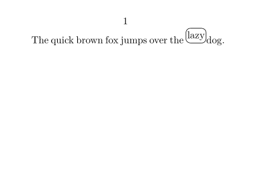
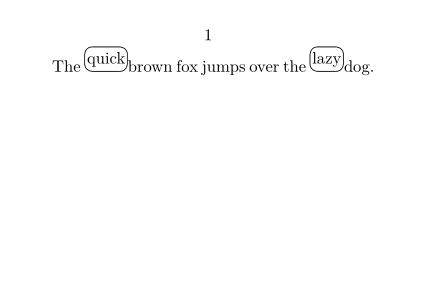
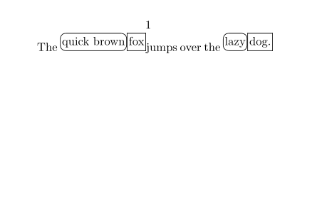
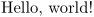
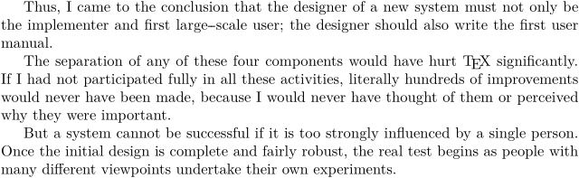
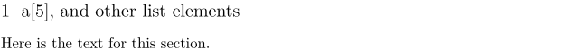

| TODO: It'd be good to have a starting "Main tutorial page", that not only links the existing tutorials together, but does so in a didactic manner, forming a cohesive whole, with clear steps. (See: To-Do List) |
Contents
ConTeXt has a very logical structure. Once you’re familiar with its basic underlying principles, you will find that many of its commands seem quite natural. In this introduction, we’ll look at two aspects of ConTeXt’s structure:
- the three main types of commands
- the three main delimiters
Let’s start with the commands...
start-stop , setup , and define
There are three main types of commands in ConTeXt:
-
start-stop
: To apply
something
to some text, enclose the text in
\startsomething\stopsomething. -
setup
: To configure
something
for the rest of the document, use
\setupsomething. -
define
: To create a named customization of
something
, use
\definesomething.
The usual way to use these types of commands is as follows. If you want to apply something (such as formatting) to text, enclose the text in \startsomething \stopsomething. The arguments of \startsomething, enclosed in [ ], can be used to configure the exact nature of the something that you want to apply. For example, in the middle of a ConTeXt document:
-
\setuppapersize[A8,landscape] \starttext The quick brown fox jumps over the \startframed[corner=round] lazy \stopframed dog. \stoptext
- 
However, setting the arguments of a start-stop command locally like this is usually not the best way to configure the something that you are applying. The problem with modifying the arguments locally like this is that if you eventually reuse this configuration — in this document or even in other documents that you might write — you won’t be able to edit and maintain the configuration consistently. You might be able to get away with applying formatting locally like this if you use it in only one single place, but since you generally don’t know how you might want to use the same configuration in the future, it’s usually best to avoid modifying modifying start-stop command arguments locally like this.
A somewhat better way to configure something is to use setupsomething at the start of your document, perhaps even in a section of your code devoted to such configurations. This will configure something from then on in the document: the default configuration of this particular something from then on in your document will be whatever you have set it to in this way. For example:
-
\setuppapersize[A8,landscape] \starttext \setupframed[corner=round] The \startframed quick \stopframed brown fox jumps over the \startframed lazy \stopframed dog. \stoptext
- 
Since you have used \setupframed for rounded corners at the start, that is the default behavior for \startframed throughout the document. You can still override it locally if need be, but in doing so, consider the cautions above about local modifications.
But this still isn’t the best way to configure something because what if you might — now or in the future — have more than one type of frame in your document? In order to anticipate such possibilities, the best way to configure something is ordinarily to use definesomething to create a meaningful name for each of your custom configurations. These custom configurations will be easy to modify globally in a consistent way, now and into the future. And if you choose your names well, your ConTeXt code will be easier for human beings (including yourself) to read. For example:
-
\setuppapersize[A8,landscape] \defineframed[adjectiveFramed][corner=round] \defineframed[nounFramed] \starttext The \startframed[adjectiveFramed] quick brown \stopframed \startframed[nounFramed] fox \stopframed jumps over the \startframed[adjectiveFramed] lazy \stopframed \startframed[nounFramed] dog. \stopframed \stoptext
- 
When you read this code, you can tell immediately that nouns are framed one way, and adjectives another. Since it uses \defineframed and gives these customizations informative names, editing and maintaining this document is much easier. If you decide that you want to give all the adjectives some other type of frame, a simple change to the \defineframed is all that is needed. There is no need to worry about going through with search and replace and trying to make sure that you find and update all the adjective frames. A single small change will make the update globally and consistently throughout the document.
Notice that it was worthwhile to define nounFramed even though it contained no customizations. Even though its current configuration is the same as the default configuration for frames, you might decide to change that later. If you don’t set up the definition now, there will be no easy way to make changes to the frames for all nouns (and nothing else) later.
Of course not every command in ConTeXt is a start-stop, setup, or define type of command, but many of them are, including many of the most commonly used commands. If you understand the basic idea behind these types of commands, you will find that you are already able to do lots of things in ConTeXt.
A minimal ConTeXt document
Now that you know the three main types of ConTeXt commands, let’s look at how you use that structure to make documents. Here is a very minimal example of a ConTeXt document:
\starttext Hello, world! \stoptext
If you're not sure how to compile this, or if you want more detailed instructions for how to make a ConTeXt document in general, see the First Document page.
When you compile the code above, it produces a page with a 1 in the center at the top and with the text:
- 
That’s it — that’s all you need to make a ConTeXt document!
You can think of the code here this way: ConTeXt’s way of formatting the entire text of the document is called text, so to apply that way of formatting you enclose the document text in \starttext \stoptext.
Customizing things: paper size, page numbering, and paragraph indenting
When you compile this document, you’ll probably immediately see some things that you want to change. For example, the default paper size in ConTeXt is A4. This works well for most of the world, but if you’re in the United States, you might prefer your paper size to be letter. That’s easy enough. The way that paper is sized for a document in ConTeXt is called papersize. You could use \definepapersize to define a letter configuration for papersize, but the page size letter is already built-in, so you don’t need to do that. So since you want to configure papersize globally for the entire document, use \setuppapersize[letter] at the start of your document:
\setuppapersize[letter] \starttext Hello, world! \stoptext
Note that paper size is not the type of thing that you ordinarily set locally for only part of the document, so there is no \startpapersize \stoppapersize. You just configure it globally with \setuppapersize, and if you want to define new paper sizes beyond what ConTeXt has already built-in, you use \definepapersize.
Another thing you might like to change is the page numbering. By default, ConTeXt places a page number at the center of the top of the page. To make it default to the center of the bottom of the page instead, you can use \setuppagenumbering[location=bottom].
\setuppapersize[letter] \setuppagenumbering[location=bottom] \starttext Hello, world! \stoptext
It’s worth thinking about why you use \setuppagenumbering here. A page numbering is inherently global to a document: it can be turned on and off, and it can be configured differently in different parts of the document, but there is only one page numbering for a document. So all you can do is configure it with \setuppagenumbering. There is no \definepagenumbering and no \startpagenumbering or \stoppagenumbering. (Oddly enough, there is a \setupuserpagenumber command though, so if you find that \setuppagenumbering isn’t giving you enough options, you might look at \setupuserpagenumber too.)
When you add more text to your document, you might notice that by default, paragraphs are not indented. The way that paragraphs are indented in a ConTeXt is called indenting, so you can use \setupindenting to configure it globally for your document. To make paragraphs by default indented by a medium amount, use \setupindenting[yes, medium]. (Here yes turns the indenting on, but by default the amount is still none, so medium is used to specify the amount.)
\setuppapersize[letter] \setuppagenumbering[location=bottom] \setupindenting[yes, medium] \starttext \input knuth \stoptext
produces a full page with the following text:
- 
To generate some text for these paragraphs, we have used \input knuth to include a quotation from Knuth that is built-in to ConTeXt. You will find that this quotation is often used in ConTeXt documentation.
While using \setupindenting will do the job, for the reasons discussed above it would actually be better first to use \defineindenting to give your favorite indentation patterns names. Then you can use \setupindenting to make one of these the default for this document, as in:
\setuppapersize[letter] \setuppagenumbering[location=bottom] \defineindenting[myStandardIndenting][yes, medium] \setupindenting[myStandardIndenting] \starttext \input knuth \stoptext
produces a full page with the following text:

In practice, you will often see people skip over the \defineindenting, but as discussed above, for many reasons it is helpful to include it.
Note that ConTeXt does not have a \startindenting or \stopindenting command. Instead, the named indenting configurations that you have defined with \defineindenting can be used in other commands that define regions that can have indenting.
Further customization: highlighting
For another example of what you might want to customize, suppose that in a book you are writing, you want to italicize terms that you will define later in the book. At first glance, it might be tempting just to italicize each one individually, as in:
-
The quick brown {\it fox} jumped over the lazy {\it dogs}.
which produces
Based on the discussions above though, you should know why this isn’t a good idea. What should you do instead? For a hint, the way that ConTeXt formats highlighted text is called highlight. You might think that you could use \starthighlight \stophighlight, and that would be a good guess, since that would fit in with the overall logic of ConTeXt. However, those commands are still under development, so you can't use them yet. But \setuphighlight and \definehighlight do exist, and they let you configure and define ways to highlight text.
There is a slight twist though: when you use \definehighlight, since the start-stop version of highlights have not yet been implemented, you can instead use the name you defined to produce the highlighting, as in:
-
\definehighlight[definedTerm][style=it] The quick brown \definedTerm{fox} jumped over the lazy \definedTerm{dogs}.
which produces
-

As long as you keep in mind that definedTerm is really just an alternative version in place of \starthighlight \stophighlight (which aren’t implemented in ConTeXt yet), this still fits into the overall logic of ConTeXt.
Even though this example contains some extra complications, it gives another illustration of how you can use define commands to make more readable and reusable code in ConTeXt.
Delimiters in ConTeXt
One other useful thing to understand about ConTeXt is what it uses for delimiters. There are three main delimiters in ConTeXt:
- start-stop commands: you have learned about these above.
- square brackets : arguments to ConTeXt commands are enclosed in [ ].
- curly braces : in ConTeXt, { } are used as delimiters to group text as a single self-contained unit.
Square brackets
You have already seen lots of examples of how arguments to ConTeXt commands are enclosed in [ ]. ConTeXt commands usually have one, two, or three (occasionally more) arguments, and each one is enclosed in [ ]. For example, this use of \definehighlight has two arguments:
\definehighlight[definedTerm][style=it]
Many ConTeXt commands have optional arguments. These can be written as [ ] or completely omitted.
Some arguments in ConTeXt are single words, as in definedTerm above. Other arguments are key=value pairs, as in style=it above. Still other arguments are comma-separated lists of words and/or key=value pairs, as in:
\definehighlight[definedTerm][style=it, color=red]
In this example, there are two arguments and three parameters (each item in a comma-separated list being counted as a parameter).
Curly braces
There are three main ways that { } are used as delimiters to group text as a single unit:
- with commands that operate on the single unit that follows them
- to define the scope of switches (such as font switches)
- to use [ ] or , in a command argument
An example above of how { } are used with commands that operate on the single unit that follows them is:
\definehighlight[definedTerm][style=it] The quick brown \definedTerm{fox} jumped over the lazy \definedTerm{dogs}.
In this case, \definedTerm is the type of command that operates on the single unit that follows it, so you need { } to indicate that the enclosed fox and dogs are what is to be operated on. A fair number of ConTeXt commands work this way: they may have some optional arguments that configure them enclosed in [ ], but whatever comes immediately after that is what the command is applied to.
An example above of how { } are used to delimit switches is:
The quick brown {\em fox} jumped over the lazy {\em dogs}.
While this is not the best way to achieve this formatting, it is still valid. The \em is a font switch, and it applies only to the grouped unit that it is contained in. The { } are used to delimit this unit.
To see how { } are used to treat text within command arguments as a single unit, notice that the following example doesn’t produce the desired section title a[5], and other list elements:
-
\startsection[title=a[5], and other list elements] Here is the text for this section. \stopsection
produces
-

But this works:
-
\startsection[title={a[5], and other list elements}] Here is the text for this section. \stopsection
produces
- 
You would run into a similar problem if your section title contained a comma. In any such situation, enclosing the value in { } solves the problem.
Summary
You have now seen the three main types of ConTeXt commands (start-stop, setup, and define) and how to use them. You have also seen the three main types of delimiters that ConTeXt uses (start-stop commands, [ ], and { }) and how to use them. Understanding only these things will get you pretty far in ConTeXt.
Of course, the basic concepts described in this introduction are by no means exhaustive. There is plenty more in ConTeXt to explore! But hopefully this introduction will at least help you make your way through the other documentation more readily.